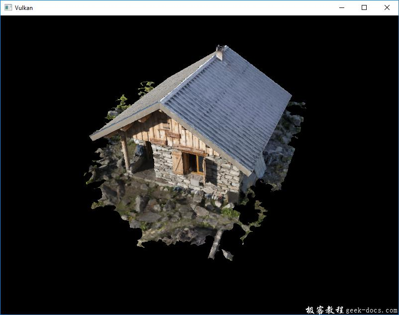

Vulkan 生成贴图(mipmap)，现在我们的程序可以加载和渲染3D模型了。Mipmap广泛应用于游戏和渲染软件，对于如何创建它们，Vulkan给了我们完全的控制权。
Mipmap是缩小版本的image，每个新image是前一张图的宽度和高度的一半。Mipmap用于作为细节级别（即Level of Detail）的一种方式。远离相机的物体将从较小的mip图像中采样纹理。使用较小的图像可以提高渲染速度，避免Moiré patterns这样的锯齿。示例如下:
图像创建
在Vulkan中，每个mip图像都保存在VkImage的不同的mip层里。0级是原始图像，0级之后的Mip级通常称为Mip链。
创建VkImage时指定mip级别的数量。到目前为止，我们一直将这个值设置为1。我们需要从图像的维数来计算mip级别的数量。首先，添加一个类成员来存储这个数字:
...
uint32_t mipLevels;
VkImage textureImage;
...
一旦我们在createTextureImage中加载纹理，就可以得到mipLevels的值:
int texWidth, texHeight, texChannels;
stbi_uc* pixels = stbi_load(TEXTURE_PATH.c_str(), &texWidth, &texHeight, &texChannels, STBI_rgb_alpha);
...
mipLevels = static_cast<uint32_t>(std::floor(std::log2(std::max(texWidth, texHeight)))) + 1;
这将计算mip链中的级别数。max函数选择最大维度。log2函数计算维数除以2的次数。floor函数处理最大维度不是2的幂的情况。添加1使原始图像具有mip级别。
要使用这个值，我们需要更改createImage、createImageView和transitionImageLayout函数，以允许我们指定mip级别的数量。在函数中添加一个mipLevels参数:
void createImage(uint32_t width, uint32_t height, uint32_t mipLevels, VkFormat format, VkImageTiling tiling, VkImageUsageFlags usage, VkMemoryPropertyFlags properties, VkImage& image, VkDeviceMemory& imageMemory) {
...
imageInfo.mipLevels = mipLevels;
...
}
VkImageView createImageView(VkImage image, VkFormat format, VkImageAspectFlags aspectFlags, uint32_t mipLevels) {
...
viewInfo.subresourceRange.levelCount = mipLevels;
...
void transitionImageLayout(VkImage image, VkFormat format, VkImageLayout oldLayout, VkImageLayout newLayout, uint32_t mipLevels) {
...
barrier.subresourceRange.levelCount = mipLevels;
...
更新所有对这些函数的调用，使用正确的值：
createImage(swapChainExtent.width, swapChainExtent.height, 1, depthFormat, VK_IMAGE_TILING_OPTIMAL, VK_IMAGE_USAGE_DEPTH_STENCIL_ATTACHMENT_BIT, VK_MEMORY_PROPERTY_DEVICE_LOCAL_BIT, depthImage, depthImageMemory);
...
createImage(texWidth, texHeight, mipLevels, VK_FORMAT_R8G8B8A8_UNORM, VK_IMAGE_TILING_OPTIMAL, VK_IMAGE_USAGE_TRANSFER_DST_BIT | VK_IMAGE_USAGE_SAMPLED_BIT, VK_MEMORY_PROPERTY_DEVICE_LOCAL_BIT, textureImage, textureImageMemory);
swapChainImageViews[i] = createImageView(swapChainImages[i], swapChainImageFormat, VK_IMAGE_ASPECT_COLOR_BIT, 1);
...
depthImageView = createImageView(depthImage, depthFormat, VK_IMAGE_ASPECT_DEPTH_BIT, 1);
...
textureImageView = createImageView(textureImage, VK_FORMAT_R8G8B8A8_UNORM, VK_IMAGE_ASPECT_COLOR_BIT, mipLevels);
transitionImageLayout(depthImage, depthFormat, VK_IMAGE_LAYOUT_UNDEFINED, VK_IMAGE_LAYOUT_DEPTH_STENCIL_ATTACHMENT_OPTIMAL, 1);
...
transitionImageLayout(textureImage, VK_FORMAT_R8G8B8A8_UNORM, VK_IMAGE_LAYOUT_UNDEFINED, VK_IMAGE_LAYOUT_TRANSFER_DST_OPTIMAL, mipLevels);
生成贴图
我们的纹理图像现在有多个mip级别，但是staging缓冲区只能用于填充mip级别0。其他级别仍未定义。要填充这些级别，我们需要从现有的单个级别生成数据。我们将使用vkCmdBlitImage命令。此命令执行复制、缩放和筛选操作。我们将多次调用此函数，以将数据blit到纹理图像的每个级别。
VkCmdBlit被认为是一个传输操作，因此我们必须通知Vulkan，我们打算同时使用纹理图像作为传输的源和目标。在createTextureImage中，将VK_IMAGE_USAGE_TRANSFER_SRC_BIT添加到纹理图像的使用标志中:
...
createImage(texWidth, texHeight, mipLevels, VK_FORMAT_R8G8B8A8_UNORM, VK_IMAGE_TILING_OPTIMAL, VK_IMAGE_USAGE_TRANSFER_SRC_BIT | VK_IMAGE_USAGE_TRANSFER_DST_BIT | VK_IMAGE_USAGE_SAMPLED_BIT, VK_MEMORY_PROPERTY_DEVICE_LOCAL_BIT, textureImage, textureImageMemory);
...
与其他图像操作一样，vkCmdBlitImage取决于它所操作的图像的布局。我们可以将整个映像转换为VK_IMAGE_LAYOUT_GENERAL，但这很可能很慢。为了获得最佳性能，源映像应该位于VK_IMAGE_LAYOUT_TRANSFER_SRC_OPTIMAL中，目标映像应该位于VK_IMAGE_LAYOUT_TRANSFER_DST_OPTIMAL中。Vulkan允许我们独立地转换图像的每个mip级别。每blit一次只处理两个mip级别，因此我们可以将每个级别转换为blits命令之间的最佳布局。
transitionImageLayout只在整个图像上执行布局转换，所以我们需要编写更多的管道屏障命令。将createTextureImage中已有的转换改为VK_IMAGE_LAYOUT_SHADER_READ_ONLY_OPTIMAL ：
...
transitionImageLayout(textureImage, VK_FORMAT_R8G8B8A8_UNORM, VK_IMAGE_LAYOUT_UNDEFINED, VK_IMAGE_LAYOUT_TRANSFER_DST_OPTIMAL, mipLevels);
copyBufferToImage(stagingBuffer, textureImage, static_cast<uint32_t>(texWidth), static_cast<uint32_t>(texHeight));
//transitioned to VK_IMAGE_LAYOUT_SHADER_READ_ONLY_OPTIMAL while generating mipmaps
...
这将使VK_IMAGE_LAYOUT_TRANSFER_DST_OPTIMAL中的纹理图像的每一层都是最优的。在blit命令读取完成后，每个级别都将转换为VK_IMAGE_LAYOUT_SHADER_READ_ONLY_OPTIMAL。
我们现在要写一个生成mipmap的函数:
void generateMipmaps(VkImage image, int32_t texWidth, int32_t texHeight, uint32_t mipLevels) {
VkCommandBuffer commandBuffer = beginSingleTimeCommands(); VkImageMemoryBarrier barrier = {};
barrier.sType = VK_STRUCTURE_TYPE_IMAGE_MEMORY_BARRIER;
barrier.image = image;
barrier.srcQueueFamilyIndex = VK_QUEUE_FAMILY_IGNORED;
barrier.dstQueueFamilyIndex = VK_QUEUE_FAMILY_IGNORED;
barrier.subresourceRange.aspectMask = VK_IMAGE_ASPECT_COLOR_BIT;
barrier.subresourceRange.baseArrayLayer = 0;
barrier.subresourceRange.layerCount = 1;
barrier.subresourceRange.levelCount = 1; endSingleTimeCommands(commandBuffer);
}
我们将进行几个转换，因此我们将重用这个VkImageMemoryBarrier。以上设置的字段将对所有屏障保持不变。subresourceRange.miplevel, oldLayout, newLayout, srcAccessMask和dstAccessMask会随着每个转换而改变。
int32_t mipWidth = texWidth;
int32_t mipHeight = texHeight;for (uint32_t i = 1; i < mipLevels; i++) {}
这个循环将记录每个VkCmdBlitImage命令。注意，循环变量从1开始，而不是0。
barrier.subresourceRange.baseMipLevel = i - 1;
barrier.oldLayout = VK_IMAGE_LAYOUT_TRANSFER_DST_OPTIMAL;
barrier.newLayout = VK_IMAGE_LAYOUT_TRANSFER_SRC_OPTIMAL;
barrier.srcAccessMask = VK_ACCESS_TRANSFER_WRITE_BIT;
barrier.dstAccessMask = VK_ACCESS_TRANSFER_READ_BIT;vkCmdPipelineBarrier(commandBuffer,
VK_PIPELINE_STAGE_TRANSFER_BIT, VK_PIPELINE_STAGE_TRANSFER_BIT, 0,
0, nullptr,
0, nullptr,
1, &barrier);
首先，转换级别从i - 1 到 VK_IMAGE_LAYOUT_TRANSFER_SRC_OPTIMAL。这个转换将等待i - 1级别被填充，或者来自前面的blit命令，或者来自vkCmdCopyBufferToImage，当前blit命令将等待这次转换。
VkImageBlit blit = {};
blit.srcOffsets[0] = { 0, 0, 0 };
blit.srcOffsets[1] = { mipWidth, mipHeight, 1 };
blit.srcSubresource.aspectMask = VK_IMAGE_ASPECT_COLOR_BIT;
blit.srcSubresource.mipLevel = i - 1;
blit.srcSubresource.baseArrayLayer = 0;
blit.srcSubresource.layerCount = 1;
blit.dstOffsets[0] = { 0, 0, 0 };
blit.dstOffsets[1] = { mipWidth > 1 ? mipWidth / 2 : 1, mipHeight > 1 ? mipHeight / 2 : 1, 1 };
blit.dstSubresource.aspectMask = VK_IMAGE_ASPECT_COLOR_BIT;
blit.dstSubresource.mipLevel = i;
blit.dstSubresource.baseArrayLayer = 0;
blit.dstSubresource.layerCount = 1;
接下来，我们指定将在blit操作中使用的区域。源mip级别为i - 1，目标mip级别为i, srcOffsets数组的两个元素决定了数据将从哪个3D区域进行blit。dstOffsets确定数据将被传送到的区域，当每个mip级别的大小是前一个级别的一半时，dstOffsets[1]的X和Y维度除以2，当2D图像的深度为1srcOffsets[1]和dstOffsets[1]的Z维数必须为1。
vkCmdBlitImage(commandBuffer,
image, VK_IMAGE_LAYOUT_TRANSFER_SRC_OPTIMAL,
image, VK_IMAGE_LAYOUT_TRANSFER_DST_OPTIMAL,
1, &blit,
VK_FILTER_LINEAR);
现在，我们记录blit命令。注意，textureImage同时用于srcImage和dstImage参数。这是因为我们在同一幅图像的不同层次之间穿梭。源mip级别刚刚转换为VK_IMAGE_LAYOUT_TRANSFER_SRC_OPTIMAL，目标级别仍然位于createTextureImage中的VK_IMAGE_LAYOUT_TRANSFER_DST_OPTIMAL中。
最后一个参数允许我们指定要在blit中使用的VkFilter。我们在这里有相同的过滤选项，当我们做VkSampler。我们使用VK_FILTER_LINEAR来启用插值。
barrier.oldLayout = VK_IMAGE_LAYOUT_TRANSFER_SRC_OPTIMAL;
barrier.newLayout = VK_IMAGE_LAYOUT_SHADER_READ_ONLY_OPTIMAL;
barrier.srcAccessMask = VK_ACCESS_TRANSFER_READ_BIT;
barrier.dstAccessMask = VK_ACCESS_SHADER_READ_BIT;vkCmdPipelineBarrier(commandBuffer,
VK_PIPELINE_STAGE_TRANSFER_BIT, VK_PIPELINE_STAGE_FRAGMENT_SHADER_BIT, 0,
0, nullptr,
0, nullptr,
1, &barrier);
这个屏障将mip级别i - 1转换为VK_IMAGE_LAYOUT_SHADER_READ_ONLY_OPTIMAL。此转换将等待当前blit命令完成。所有采样操作都将等待这个转换完成。
...
if (mipWidth > 1) mipWidth /= 2;
if (mipHeight > 1) mipHeight /= 2;
}
在循环的末尾，我们将当前mip维数除以2。我们在除法之前检查每个维度，以确保维度永远不会变为0。这将处理图像不是正方形的情况，因为mip维度中的一个将比另一个维度早达到1。当这种情况发生时，所有剩余级别的维度都应该保持为1。
barrier.subresourceRange.baseMipLevel = mipLevels - 1;
barrier.oldLayout = VK_IMAGE_LAYOUT_TRANSFER_DST_OPTIMAL;
barrier.newLayout = VK_IMAGE_LAYOUT_SHADER_READ_ONLY_OPTIMAL;
barrier.srcAccessMask = VK_ACCESS_TRANSFER_WRITE_BIT;
barrier.dstAccessMask = VK_ACCESS_SHADER_READ_BIT; vkCmdPipelineBarrier(commandBuffer,
VK_PIPELINE_STAGE_TRANSFER_BIT, VK_PIPELINE_STAGE_FRAGMENT_SHADER_BIT, 0,
0, nullptr,
0, nullptr,
1, &barrier); endSingleTimeCommands(commandBuffer);
}
在结束命令缓冲区之前，我们再插入一个管道屏障。这个屏障将最后一个mip级别从VK_IMAGE_LAYOUT_TRANSFER_DST_OPTIMAL转换到VK_IMAGE_LAYOUT_SHADER_READ_ONLY_OPTIMAL。这不是由循环处理的，因为最后一个mip级别永远不会被释放。
最后，在createTextureImage中添加对generateMipmaps 的调用：
transitionImageLayout(textureImage, VK_FORMAT_R8G8B8A8_UNORM, VK_IMAGE_LAYOUT_UNDEFINED, VK_IMAGE_LAYOUT_TRANSFER_DST_OPTIMAL, mipLevels);
copyBufferToImage(stagingBuffer, textureImage, static_cast<uint32_t>(texWidth), static_cast<uint32_t>(texHeight));
//transitioned to VK_IMAGE_LAYOUT_SHADER_READ_ONLY_OPTIMAL while generating mipmaps
...
generateMipmaps(textureImage, texWidth, texHeight, mipLevels);
我们的纹理图像的mipmaps现在完全被填满了。
线性滤波的支持
使用像vkCmdBlitImage这样的内置函数来生成所有mip级别是非常方便的，但不幸的是，它不能保证在所有平台上都受支持。它需要我们用来支持线性过滤的纹理图像格式，可以使用vkGetPhysicalDeviceFormatProperties函数来检查。我们将为此向generateMipmaps函数添加一个检查。
首先添加一个指定图像格式的附加参数:
void createTextureImage() {
...
generateMipmaps(textureImage, VK_FORMAT_R8G8B8A8_UNORM, texWidth, texHeight, mipLevels);
}void generateMipmaps(VkImage image, VkFormat imageFormat, int32_t texWidth, int32_t texHeight, uint32_t mipLevels) {
...
}
在generateMipmaps函数中，使用vkGetPhysicalDeviceFormatProperties请求纹理图像格式的属性:
void generateMipmaps(VkImage image, VkFormat imageFormat, int32_t texWidth, int32_t texHeight, uint32_t mipLevels) { // Check if image format supports linear blitting
VkFormatProperties formatProperties;
vkGetPhysicalDeviceFormatProperties(physicalDevice, imageFormat, &formatProperties); ...
VkFormatProperties结构有三个字段，分别为linearTilingFeatures、optimalTilingFeatures和bufferFeatures，每个字段根据使用格式的方式描述如何使用格式。我们采用最优平铺格式创建一个纹理图像，所以我们需要检查优化功能。线性过滤特性的支持可以通过vk_format_feature_sampled_image_filter_linear进行检查:
if (!(formatProperties.optimalTilingFeatures & VK_FORMAT_FEATURE_SAMPLED_IMAGE_FILTER_LINEAR_BIT)) {
throw std::runtime_error("texture image format does not support linear blitting!");
}
在这种情况下有两种选择，可以实现一个函数，该函数搜索支持线性bl的常见纹理图像格式，或者使用雷士stb_image_resize的库在软件中实现mipmap生成。然后，可以像加载原始图像一样将每个mip级别加载到图像中。
应该注意的是，在实际操作中，在运行时生成mipmap级别并不常见。通常它们是预先生成的，并与基本层一起存储在纹理文件中，以提高加载速度。在软件中实现大小调整和从文件中加载多个级别留给读者作为练习。
采样器
当VkImage持有mipmap数据时，VkSampler控制如何在呈现时读取该数据。Vulkan允许我们指定minLod、maxLod、mipLodBias和mipmapMode(“Lod”表示“Level of Detail”)。采样纹理时，采样器根据如下伪代码选择一个mip级别:
lod = getLodLevelFromScreenSize(); //smaller when the object is close, may be negative
lod = clamp(lod + mipLodBias, minLod, maxLod);level = clamp(floor(lod), 0, texture.mipLevels - 1); //clamped to the number of mip levels in the textureif (mipmapMode == VK_SAMPLER_MIPMAP_MODE_NEAREST) {
color = sample(level);
} else {
color = blend(sample(level), sample(level + 1));
}
如果samplerInfo.mipmapMode的值是VK_SAMPLER_MIPMAP_MODE_NEAREST, lod选择要采样的mip级别。如果mipmap模式是VK_SAMPLER_MIPMAP_MODE_LINEAR，则使用lod选择要采样的两个mip级别。这些mip级别是抽样的，结果是线性混合。
采样操作也被lod影响：
if (lod <= 0) {
color = readTexture(uv, magFilter);
} else {
color = readTexture(uv, minFilter);
}
如果对象靠近相机，则使用magFilter作为过滤器。如果对象距离摄像机较远，则使用minFilter。正常情况下，lod是非负的，关闭相机时只有0。mipLodBias让我们迫使Vulkan使用比正常情况下更低的lod和level。
要查看本章的结果，我们需要为textureSampler选择值。我们已经将minFilter和magFilter设置为使用VK_FILTER_LINEAR。我们只需要为minLod、maxLod、mipLodBias和mipmapMode选择值。
void createTextureSampler() {
...
samplerInfo.mipmapMode = VK_SAMPLER_MIPMAP_MODE_LINEAR;
samplerInfo.minLod = 0; // Optional
samplerInfo.maxLod = static_cast<float>(mipLevels);
samplerInfo.mipLodBias = 0; // Optional
...
}
为了允许使用全部mip级别，我们将minLod设置为0，并将maxLod设置为mip级别的数量。我们没有理由更改lod值，所以我们将mipLodBias设置为0。
现在运行你的程序，可以看到如下情景：

因为我们的场景是很简单，没有太大的差别。如果你仔细观察，会发现有细微的差别。
您可以尝试使用采样器设置，看看它们如何影响mipmapping。例如，通过改变minLod，您可以强制采样器不使用最低的mip级别:
samplerInfo.minLod = static_cast<float>(mipLevels / 2);
这些设置将生成如下图像:
当物体离相机较远时，就会使用较高的mip级别。


非常感谢